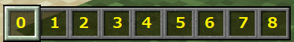
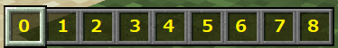

【はかいの矢】
はじめに
以下のように矢を放った場所が爆発します。

ちなみに先に作っていた「いなずまの弓」とコンボするとこんなイメージ。

あまり使い過ぎるとワールド地形が悲惨な事になるので注意しましょう。
ちなみに先に作っていた「いなずまの弓」とコンボするとこんなイメージ。
あまり使い過ぎるとワールド地形が悲惨な事になるので注意しましょう。
「はかいの矢」の取得
ビヘイビアパックを適用しておけば、以下のコマンドでユニークアイテムとして「はかいの矢」が手に入ります。

以下のようにスロットを置き換える事で「いなずまの矢」と使い分けができます。

スロット番号は以下のように左から順番に割り振られています。アイテム使用時は若い数字の方が優先されます。

※スロット番号についてはインベントリの詳細も含めて>> こちらのページで詳しく説明されています。
以下のようにスロットを置き換える事で「いなずまの矢」と使い分けができます。
スロット番号は以下のように左から順番に割り振られています。アイテム使用時は若い数字の方が優先されます。

※スロット番号についてはインベントリの詳細も含めて>> こちらのページで詳しく説明されています。
サーバー側の実装
「いなずまの弓」の時と同様に今回のアイテムの実装では"ItemUsed"というサブスクライブイベントを使用しています。
マインクラフト上でアイテムを使ったと認識されると発生するイベントのようで、フレームワークを使って以下の内容を実装しています。
※サブスクライブイベントの処理内容については>> こちらでご紹介しています。
「はかいの矢」を放った時に発生するイベントデータの形式
今回の実装は「いなずまの矢」とほとんど同じです。
「いなずまの矢」の場合は最後に
以上の事を踏まえて今回は「いなずまの矢」の実装時に追加したUNIT処理へ以下の処理を追加しています。
※以下の黄色の部分が今回追加したところです。
※ここでは２つ目の
app/CommandUnits/CommandForMinecraft.php
マインクラフト上でアイテムを使ったと認識されると発生するイベントのようで、フレームワークを使って以下の内容を実装しています。
※サブスクライブイベントの処理内容については>> こちらでご紹介しています。
「はかいの矢」を放った時に発生するイベントデータの形式
{
"body":
{
"count":<数字>,
"item":
{
"aux":421,
"id":"arrow",
"namespace":<文字列>
},
"player":
{
"color":<16進数？>,
"dimension":<数字>,
"id":<数字>,
"name":<文字列>,
"position":
{
"x":<数字>,
"y":<数字>,
"z":<数字>
},
"type":<文字列>,
"variant":<数字>,
"yRot":<数字>
},
"useMethod":<数字>
},
"header":
{
"eventName":"ItemUsed",
"messagePurpose":<文字列>,
"version":<数字>
}
}
今回の実装は「いなずまの矢」とほとんど同じです。
「いなずまの矢」の場合は最後に
summonコマンドで雷を呼び出していましたが、今回はエンドクリスタルを呼び出しています。以上の事を踏まえて今回は「いなずまの矢」の実装時に追加したUNIT処理へ以下の処理を追加しています。
※以下の黄色の部分が今回追加したところです。
※ここでは２つ目の
ItemUsedイベントを受信（aux=421）した時にマインクラフトへfunctionコマンドを送信（getCommandDataForExplodeArrowメソッドでコマンド文字列を生成）しています。app/CommandUnits/CommandForMinecraft.php
protected function getItemUsedArrow()
{
return function(ParameterForMinecraft $p_param): ?string
{
$p_param->logWriter('debug', ['MINECRAFT ITEM_USED:ARROW' => 'START']);
$sta = $p_param->getStatusName();
// 受信データの取得
$rcv = $p_param->getRecvData();
if($rcv === null)
{
// ディスパッチャー強制
$p_param->setForcedDispatcher(true);
return $sta;
}
// ItemUsed以外のイベントの判定
if(!(isset($rcv['data']['header']['eventName']) && $rcv['data']['header']['eventName'] === 'ItemUsed'))
{
return $sta;
}
// 弓タイプの取得
$bow_type = $p_param->getTempBuff(['bow_type']);
// 通常の矢の場合
if($rcv['data']['body']['item']['aux'] === 0)
{
// コマンド送信
$cmd_data = $p_param->getCommandDataForArrowTagNormal($rcv['data']['body']['player']['name']);
$data =
[
'data' => $cmd_data
];
$p_param->setSendStack($data);
return null;
}
// コマンド送信
$cmd_data = $p_param->getCommandDataForArrowTagCheat($rcv['data']['body']['player']['name']);
$data =
[
'data' => $cmd_data
];
$p_param->setSendStack($data);
// コマンドデータの取得
if($rcv['data']['body']['item']['aux'] === 411)
{
// いなずまの矢
$cmd_data = $p_param->getCommandDataForThunderArrow($rcv['data']['body']['player']['name']);
}
else
if($rcv['data']['body']['item']['aux'] === 421)
{
// はかいの矢
$cmd_data = $p_param->getCommandDataForExplodeArrow($rcv['data']['body']['player']['name']);
}
// コマンド送信
$data =
[
'data' => $cmd_data
];
$p_param->setSendStack($data);
return null;
};
}